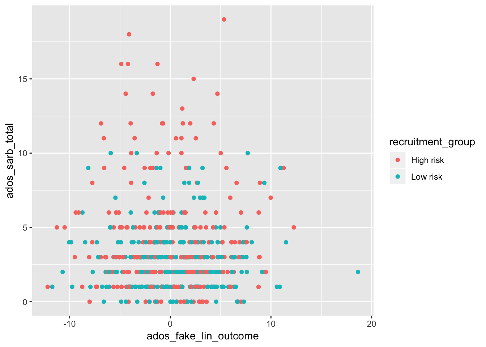
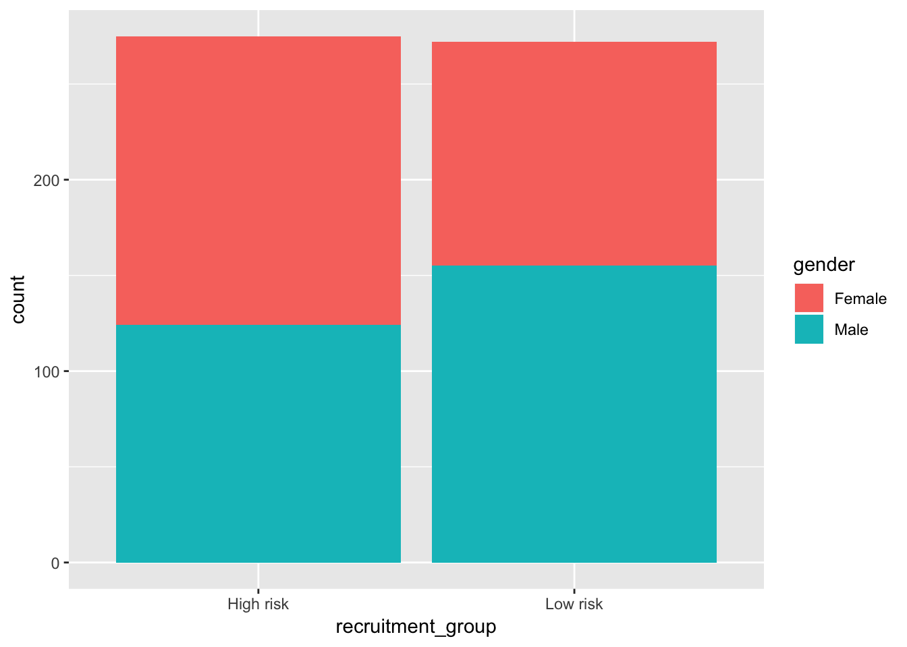
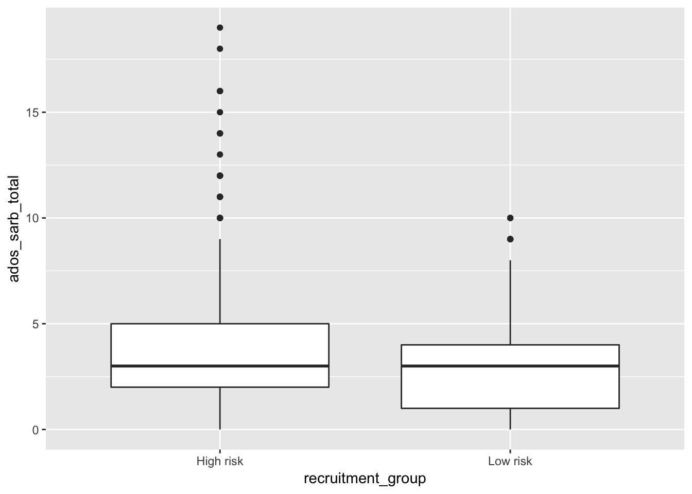

Chapter 4 Data Visualization
- We will use the ggplot2 library for data visualization
library("ggplot2")
# if not installed:
# install.packages("ggplot2")4.1 Read in Data
- Our input data will be a scored version of the artificial ADOS Module 2dataset with some fake columns to demonstrate how to use R to perform specific data analyses.
adosm2 <- read.csv('./datasets/adosm2_scored.csv',
stringsAsFactors = FALSE)4.2 Our dataset
head(adosm2)## id visit cbe_36 recruitment_group gender ados_version ados_algorithm
## 1 1 36 TD High risk Female ADOS-2 younger than age 5
## 2 2 30 Non-TD High risk Female ADOS-1 younger than age 5
## 3 2 36 Non-TD Low risk Male ADOS-2 younger than age 5
## 4 3 36 TD Low risk Male ADOS-1 younger than age 5
## 5 4 36 ASD High risk Female ADOS-2 younger than age 5
## 6 5 36 ASD High risk Male ADOS-1 younger than age 5
## ados_a1 ados_a2 ados_a3 ados_a4 ados_a5 ados_a6 ados_a7 ados_a8 ados_b1
## 1 0 0 2 1 0 0 1 NA 0
## 2 1 1 0 0 0 2 0 0 0
## 3 0 0 0 0 0 0 1 NA 0
## 4 1 1 1 0 0 0 1 1 0
## 5 1 2 2 1 2 1 1 NA 2
## 6 1 2 1 1 1 2 1 0 0
## ados_b2 ados_b3 ados_b4 ados_b5 ados_b6 ados_b7 ados_b8 ados_b9 ados_b10
## 1 1 0 0 0 0 0 0 NA 0
## 2 0 0 0 0 0 0 1 0 0
## 3 0 0 0 0 0 0 1 NA 1
## 4 0 0 0 1 0 0 0 0 0
## 5 1 0 0 0 0 0 2 NA 2
## 6 1 0 1 0 1 0 1 1 1
## ados_b11 ados_b12 ados_b13a ados_b13b ados_b14 ados_b15 ados_b16 ados_c1
## 1 0 0 NA NA NA NA NA 0
## 2 0 NA NA NA NA NA NA 0
## 3 0 0 NA NA NA NA NA 1
## 4 0 NA NA NA NA NA NA 0
## 5 0 2 NA NA NA NA NA 0
## 6 1 NA NA NA NA NA NA 0
## ados_c2 ados_d1 ados_d2 ados_d3 ados_d4 ados_e1 ados_e2 ados_e3
## 1 1 0 0 0 0 1 0 0
## 2 0 0 1 0 NA 0 0 1
## 3 0 0 1 0 0 0 1 0
## 4 0 0 0 0 0 0 0 0
## 5 1 0 0 0 1 0 0 0
## 6 0 0 0 0 1 0 0 0
## ados_module ados_sa_total ados_rrb_total ados_sarb_total
## 1 module 2 2 1 3
## 2 module 2 1 1 2
## 3 module 2 2 1 3
## 4 module 2 3 0 3
## 5 module 2 9 2 11
## 6 module 2 6 2 8
## ados_fake_score1 ados_fake_score2 ados_fake_score3 ados_fake_lin_outcome
## 1 -1.06513001 0.998584320 -0.9534730 6.059116
## 2 -0.23353777 0.900076820 0.7804324 3.730527
## 3 -1.15568143 0.012777153 0.8189690 3.586971
## 4 0.07780154 -0.711836888 0.5982869 -3.078532
## 5 0.83883085 -0.002801434 0.7559831 -3.548941
## 6 0.79487178 -2.205095309 -0.5817975 -7.7567884.3 Data Visualization with ggplot
4.3.1 Resources
- This lesson largely borrowed and used the material in this book:
Explore Chapter 3 of the book for a much more in depth lesson
4.3.2 Plotting points
library("ggplot2")
ggplot(data = adosm2) +
geom_point(mapping = aes(x = ados_fake_lin_outcome,
y = ados_sarb_total,
color = recruitment_group))
ggplot()will create a coordinate system you can add layers on top of- it takes in the dataset to use in the graph with the
dataparameter
- it takes in the dataset to use in the graph with the
geom_point()is the extra layer we are adding on the coordinate system, so we are adding points to it- the
mappingargument will define how variables in your data will be mapped to a visual property- The
aes()argument within marks what piece of your dataset will map to the x or y axes, or even colors or fills.
- The
- the
4.3.3 Plotting with Points and Smooth
ggplot(data = adosm2, mapping = aes(x = ados_sarb_total, y = ados_fake_lin_outcome)) +
geom_point(mapping = aes(color = recruitment_group)) +
geom_smooth()## `geom_smooth()` using method = 'loess' and formula 'y ~ x'
- We can plot points with a smooth line by adding another layer with
+ geom_smooth(). - In this example, the first layer takes in our adosm2 dataset, and maps the ados_sarb_total to the x axes,and the ados_fake_lin_outcome to the y axes
- The second layer plots points using the mapping of the first layer, but in addition adds color to the points by recruitment group
The third layer uses the mapping of the first layer, so does not need any additional arguments
We can similarly create bar plots and box plots using the same syntax, but with
geom_bar()andgeom_boxplot()
4.3.4 Bar Plots
4.3.4.1 Bar plot with Colors
ggplot(data = adosm2) +
geom_bar(mapping = aes(x = recruitment_group, fill = gender))
4.3.4.2 Bar plot with separated colors and positions
ggplot(data = adosm2) +
geom_bar(mapping = aes(x = recruitment_group, fill = gender), position = "dodge")
4.3.5 Box Plots
ggplot(data = adosm2, mapping = aes(x = recruitment_group, y = ados_sarb_total)) +
geom_boxplot()
4.4 Template for graphing
ggplot(data = <DATA>) +
<GEOM_FUNCTION>(mapping = aes(<MAPPINGS>))You can search what other geom function are available by following the links on your help page:
?ggplot2